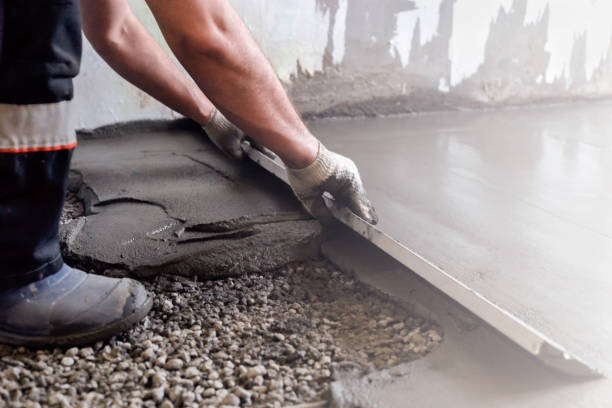
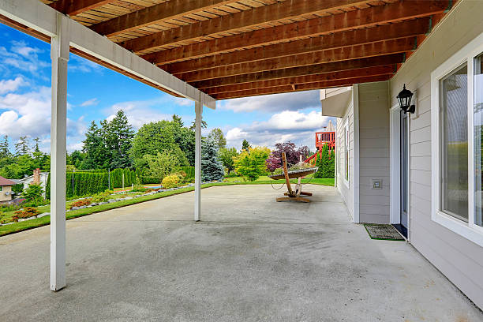

Ronan Montana
info@hudsonconcretecontractors.xyz
Ronan Montana
info@hudsonconcretecontractors.xyz

Premier concrete company in Ronan Montana offering comprehensive solutions for all concrete needs. Expert installation, repair, and maintenance with a focus on durability and aesthetic appeal. Contact us today!
Click Here To Call Us (877) 848-1711Looking for top-notch concrete services in Ronan Montana ? Our concrete company stands as a leader in the industry, offering a full range of services designed to meet your residential and commercial needs. Whether you’re planning a new driveway, a custom patio, or need professional foundation work, we have the expertise and equipment to get the job done right.
We specialize in concrete installations, repairs, and maintenance, ensuring your project is built to last. Our team uses only the highest quality materials and the latest techniques to deliver durable, attractive, and cost-effective solutions. With years of experience serving the Ronan Montana community, we pride ourselves on providing exceptional customer service and unmatched craftsmanship.
From decorative concrete to large-scale commercial projects, we handle it all with precision and care. Our licensed and insured professionals are committed to delivering results that exceed your expectations. We also offer free consultations to help you plan your project from start to finish.
Choose the best concrete company in Ronan Montana for your next project. Contact us today to get started and see why we're the preferred choice for concrete services in Ronan Montana .
Residential & commercial Hudson Concrete Contractors
Quality services at affordable prices
Immediate 24/ 7 emergency services


Cracks in concrete surfaces are a common concern for homeowners in Ronan Montana and understanding their causes is essential for effective prevention and repair. At Hudson Concrete Contractors, we are dedicated to helping you maintain your concrete surfaces in optimal condition.
Shrinkage During Curing
One of the primary causes of cracks is shrinkage during the curing process. As concrete sets and dries, it naturally contracts. If the curing process is too rapid or not properly managed, it can lead to surface cracks. Ensuring adequate curing time and methods can help mitigate this issue.
Temperature Fluctuations
Concrete is sensitive to temperature changes. Extreme heat or cold can cause the concrete to expand or contract, leading to cracks. Proper control of temperature during both the mixing and curing stages is crucial to prevent these types of issues.
Poor Mixing or Application
Improper mixing of concrete or incorrect application can result in a weak surface prone to cracking. Using the right mix ratios and ensuring proper application techniques are vital for a durable and crack-resistant surface.
Settlement and Soil Movement
Concrete surfaces can also crack due to settling or shifting of the underlying soil. If the ground beneath the concrete is unstable or poorly compacted, it can cause uneven settling, leading to cracks in the surface. Addressing soil issues before pouring concrete is essential for long-term stability.
Overloading and Structural Issues
Excessive weight or structural stress can cause concrete to crack. Ensuring that the concrete is designed and reinforced to handle the expected load is important to prevent such problems.
Preventive Measures and Repair
To prevent cracks, use proper construction techniques, maintain adequate curing conditions, and ensure proper site preparation. If cracks do appear, timely repair is essential to prevent further damage. At Hudson Concrete Contractors, we offer expert services to address and repair concrete cracks, ensuring the longevity and durability of your surfaces.
For reliable solutions to concrete issues in Ronan Montana contact Hudson Concrete Contractors today. We’re here to provide expert advice and quality service to keep your concrete surfaces in top shape.
Residential & commercial Hudson Concrete Contractors
Quality services at affordable prices
Immediate 24/ 7 emergency services
If you’re searching for trustworthy cement contractors near you, look no further than Hudson Concrete Contractors. We have built a strong reputation in Ronan Montana for providing top-quality cement services, tailored to meet your specific needs. Our team of experienced contractors has the expertise and tools to handle projects of any size effectively. We prioritize durability, efficiency, and excellent customer service at every step. With us, you can expect a seamless process from start to finish, ensuring your satisfaction with our cement solutions.

Budget constraints shouldn’t prevent you from getting quality concrete services. Our affordable concrete services provide you with high-quality solutions without breaking the bank. We offer a range of services tailored to fit your budget, whether you need a new driveway, patio, or concrete resurfacing. By choosing us, you ensure that you're getting the best value for your investment, with no compromise on quality or service.

Protecting your concrete surfaces from wear and damage is essential for longevity. Our concrete sealing services in Ronan Montana involve applying high-quality sealers that enhance the durability of your concrete and prevent moisture, stains, and UV damage. With our professional sealing, you can enjoy a cleaner, more durable surface that maintains its appearance over the years. Count on us to provide exceptional sealing services that safeguard your investment.

Uneven concrete surfaces can pose safety risks and create aesthetic issues. Our concrete leveling services are the ideal solution for addressing sunken or displaced concrete slabs, including driveways, patios, and sidewalks. We utilize advanced techniques such as mudjacking and poly-jacking to raise and stabilize your concrete, restoring its level and function. Our expert team focuses on delivering quick and effective results, ensuring minimal disruption to your daily routine. Choose our concrete leveling services for a safer, more visually appealing solution to your uneven surfaces.

A well-constructed foundation is vital to the success of any building project. Our concrete foundation installation services are designed to provide you with a stable and secure base for your home or commercial property. With our meticulous planning and execution, we ensure compliance with local codes and standards while using only the best materials. When you choose us, you’re choosing quality and dependability, making your construction project a success from the ground up.
If you're looking to transform your concrete surfaces with color and depth, our concrete staining services in Ronan Montana are the perfect choice. Staining can enhance the natural beauty of concrete while providing a protective finish. Our team will work closely with you to select colors and techniques that meet your vision, whether for indoor flooring or outdoor patios. With our keen attention to detail, your stained concrete will be a stunning focal point of your property.

With so many concrete construction companies available, selecting the right partner for your project can be daunting. Our company in Ronan Montana sets itself apart through our commitment to quality, customer service, and reliability. From residential projects to large commercial builds, we have the expertise to handle jobs of any size. Our experienced team utilizes the latest technology and practices to deliver outstanding results aligned with your specifications and deadlines.
For construction projects requiring quick, reliable concrete deliveries, our ready mix concrete delivery services are unparalleled. We provide high-quality, pre-mixed concrete that is perfect for any application, ensuring you get the right mix, right when you need it. Our experienced drivers and logistical planning help you avoid delays on-site, so you can keep your project on track. Trust us for efficient deliveries that ensure your project runs smoothly from start to finish.
Years Experience
Expert Technicians
Satisfied Clients
Compleate Projects
At Hudson Concrete Contractors, we understand that choosing the right concrete service provider is crucial for your project’s success. Serving Ronan Montana , we pride ourselves on delivering exceptional concrete solutions that meet your unique needs.
Why choose Hudson Concrete Contractors? Our team is committed to excellence in every project, whether it’s a residential driveway, a commercial foundation, or intricate decorative concrete. We combine years of experience with cutting-edge technology to ensure the highest quality results. Our skilled professionals are dedicated to delivering durable, aesthetically pleasing concrete that stands the test of time.
We prioritize customer satisfaction and transparency. From the initial consultation to project completion, we work closely with you to understand your vision and provide expert guidance. Our commitment to clear communication and timely service ensures that your project is completed on schedule and within budget. We use only premium materials and proven techniques to ensure the best possible outcome.
Hudson Concrete Contractors is renowned for its reliability and attention to detail. We take pride in our reputation for delivering outstanding concrete services throughout Ronan Montana . Our competitive pricing, combined with top-notch craftsmanship, makes us the preferred choice for all your concrete needs.
Experience the difference with Hudson Concrete Contractors. Contact us today to discuss your project and see why we’re the trusted name in concrete services across Ronan Montana . Let us turn your concrete vision into reality with professionalism and quality that exceeds expectations.
When searching for the best concrete contractors near you, look no further than our reputable team. We specialize in a wide range of concrete services designed to meet the needs of both residential and commercial clients. With years of expertise in the industry, our contractors provide high-quality service with an emphasis on customer satisfaction. From driveways and patios to foundations and repairs, we have you covered. Our commitment to using durable materials and modern techniques ensures that you will receive a product designed to withstand the test of time. Choosing us means working with a skilled team that values transparency, affordability, and excellence in everything we do.
Your home is your sanctuary, and we believe it deserves the best quality concrete work. Our residential concrete services cater to all your needs, from installing beautiful driveways to durable sidewalks. We use high-quality materials and innovative techniques to ensure that your concrete structures not only look great but also withstand the test of time. Our skilled professionals work closely with you to understand your vision and bring it to life, guaranteeing satisfaction in every project. With a focus on customer service and attention to detail, we are proud to be the premier choice for residential concrete services.
The foundation of any successful commercial venture lies in solid concrete structures. At Hudson Concrete Contractors, our commercial concrete contractors possess the expertise and experience required to tackle projects of all sizes. From warehouses to retail spaces, our team delivers high-quality concrete solutions designed to meet the specific demands of your business. We prioritize safety, efficiency, and timely project completion, ensuring your commercial space is ready as scheduled. Choose us for your commercial concrete projects, and experience the reliability and professionalism that sets us apart in Ronan Montana .
A driveway is often the first impression visitors have of your home, which is why our concrete driveway installation services are designed with aesthetics and durability in mind. A professionally installed concrete driveway not only enhances curb appeal but also offers a long-lasting solution that withstands the test of time. Our team uses high-quality materials and advanced techniques to provide a flawless finish. Additionally, we ensure timely completion, minimal disruption, and excellent customer service, making us the best choice for your driveway needs.
Transform your outdoor space into a beautiful oasis with our concrete patio installation services . Patios provide the perfect venue for gatherings and family events, and our expert crew can design and build a patio that matches your lifestyle. Our process includes meticulous planning, custom design options, and quality craftsmanship. By choosing us, you gain a patio that is not only visually appealing but also crafted to withstand the elements and regular use, ensuring years of enjoyment.
Stamped concrete offers a unique and stylish alternative to traditional concrete surfaces. Our stamped concrete services provide the opportunity to achieve the look of high-end materials like stone or brick at a fraction of the cost. Our skilled artisans use advanced techniques to create stunning patterns and designs that will elevate your residential or commercial property. Whether for driveways, patios, or walkways, our stamped concrete not only adds visual appeal but also durability, making it a smart investment. Experience the beauty of stamped concrete today by choosing Hudson Concrete Contractors.
A strong foundation is crucial for the stability of your property. When issues arise, our concrete foundation repair services come into play. Our expert team has the tools and expertise to diagnose and fix a range of foundation issues, from cracks to settling. We emphasize thorough inspections and a tailored approach to address your specific needs. Choosing us ensures that your property will have a solid foundation that eliminates worries about future structural problems.
Concrete slabs serve as the backbone of your structures, providing a durable and solid foundation. Our concrete slab installation services in Ronan Montana are conducted with precision and care, ensuring every slab we pour meets the highest standards of quality. Whether for residential or commercial projects, our experienced crew utilizes the best practices and equipment to deliver slabs that are perfectly level and structurally sound. Investing in our services means investing in the stability and integrity of your building.
Elevate the visual appeal of your property's concrete surfaces with our decorative concrete services . From intricate patterns to vibrant colors, we offer a range of options that enhance your patios, driveways, and walkways. Our expert craftsmen utilize the latest techniques and tools to deliver stunning, long-lasting results that reflect your personal style. With a commitment to excellence, we ensure your decorative projects are completed on time and within budget.
If your existing concrete surfaces are showing signs of wear and tear, our concrete resurfacing services can restore their beauty and functionality without the need for complete replacement. Our process involves applying a new layer of concrete over your existing surface, resulting in a fresh, durable finish. Ideal for driveways, patios, and pool decks, resurfacing is an affordable way to enhance your property's appeal. With our expertise, we ensure that your resurfaced area will look as good as new.
When your concrete surfaces suffer damage, you need expert concrete repair contractors that you can trust. At Hudson Concrete Contractors, our team specializes in identifying and repairing cracks, chips, and other issues to restore your concrete to its original condition. We utilize high-quality materials and proven methods to ensure effective repairs that last. Our focus on customer satisfaction and attention to detail makes us the ideal choice for concrete repairs. Let us help you protect your investment with our comprehensive repair services.
Sidewalks are not only functional but also contribute to the overall aesthetic of your property. If you’re experiencing cracks, uneven surfaces, or other issues with your sidewalks, our sidewalk concrete repair services in Ronan Montana are here to help. Our team works quickly and efficiently to restore safety and functionality to your sidewalks, using high-quality materials and techniques for a durable finish. We understand the importance of curb appeal and safety in your community. Choose us for reliable and professional sidewalk repairs that make a difference.
When it comes to flooring solutions, concrete offers unmatched durability and versatility. Our concrete floor installation services provide an attractive, low-maintenance option for both residential and commercial spaces. We can customize your concrete floors with various finishes, colors, and patterns to match your style. Our team of experts ensures a precise installation that will last for years, giving you a beautiful surface that can withstand daily wear and tear. Trust Hudson Concrete Contractors for all your concrete flooring needs and experience the benefits of this timeless choice.
When replacing or updating your concrete surfaces, effective concrete removal is essential. Our concrete removal services are thorough and efficient, ensuring that all unwanted concrete is safely and completely taken away. Our experienced team is equipped with the right tools and techniques to handle any job, big or small, while minimizing disruption to your property. We prioritize safety, proper disposal, and clean-up, leaving you with a fresh canvas for your new project. Rely on us for all your concrete removal needs, and achieve a hassle-free transition to new surfaces.
Choosing local concrete companies offers several advantages, including quicker project turnaround and personalized service. Our company stands out among local concrete contractors in Ronan Montana for our commitment to quality, integrity, and customer satisfaction. We understand the specific needs of our community and tailor our services accordingly. By partnering with us, you’re not just getting a concrete contractor; you’re supporting a local business invested in your community.
When searching for the best concrete contractors look to us for exceptional quality and service. Our team of skilled professionals is dedicated to delivering impeccable concrete solutions tailored to your specific needs. We offer extensive services from decorative applications to structural foundations, ensuring we have the expertise for any project. With competitive pricing, outstanding customer service, and a commitment to excellence, we strive to maintain our reputation as the best in the business.
Concrete pouring is a fundamental aspect of construction that requires skill and precision. Our concrete pouring services in Ronan Montana are designed to deliver flawless results for any project, from foundations to decorative features. We utilize advanced equipment and techniques to ensure even mixes and proper application, resulting in sturdy and attractive concrete surfaces. Choosing us means choosing a reliable partner dedicated to quality and safety at every step of the pouring process.
The durability and lifespan of concrete are critical considerations for homeowners and businesses in Ronan Montana . At Hudson Concrete Contractors, we understand that several factors influence how long your concrete surfaces will last and remain in good condition.
Quality of Materials
The quality of the materials used in concrete mixing directly impacts its durability. High-quality cement, aggregate, and water ensure a strong and resilient mixture. Using premium materials can prevent common issues such as cracking, scaling, and erosion, extending the lifespan of your concrete surfaces.
Proper Mixing and Curing
Correct mixing ratios and adequate curing are essential for optimal concrete performance. Over- or under-mixing can weaken the concrete, while improper curing can lead to surface cracks and reduced strength. Ensuring the right proportions and maintaining appropriate curing conditions are vital for enhancing concrete durability.
Environmental Conditions
Environmental factors play a significant role in the lifespan of concrete. Extreme temperatures, high humidity, and exposure to chemicals can accelerate wear and tear. Using sealers and protective coatings can help shield concrete from harsh environmental conditions and prolong its service life.
Load and Stress
Concrete must be designed to handle the specific loads and stresses it will encounter. Overloading or structural stress can cause premature deterioration. Properly calculating and reinforcing concrete to meet the demands of its use will ensure long-term durability.
Site Preparation and Installation
The quality of site preparation and installation is crucial. Proper grading, drainage, and soil compaction help prevent settling and cracking. Ensuring a solid foundation and correct installation practices are key to a durable concrete surface.
Maintenance Practices
Regular maintenance, such as cleaning and sealing, plays a crucial role in extending the lifespan of concrete. Routine inspections and prompt repairs of any minor issues can prevent more significant problems and preserve the integrity of your surfaces.
For expert guidance and durable concrete solutions in Ronan Montana trust Hudson Concrete Contractors. Contact us today to learn more about maintaining and enhancing the longevity of your concrete surfaces.
Ronan (Salish: ocqʔetkʷ) is a city in Lake County, Montana, United States. It lies on the Flathead Indian Reservation, approximately 12 miles south of Flathead Lake in the northwestern part of the state. The population was 1,955 at the 2020 census.
Yes, Hudson Concrete Contractors is fully licensed and insured to provide professional and safe concrete services .
Yes, we specialize in stamped concrete services in Ronan Montana offering decorative options to mimic stone, brick, or tile.
Yes, we provide concrete sidewalk installation and repair services for residential and commercial properties .
Cement is a key ingredient in concrete. Concrete is a mixture of cement, sand, gravel, and water. Hudson Concrete Contractors uses high-quality concrete for all projects .
Yes, we use special techniques and additives to pour concrete in cold weather conditions ensuring proper curing.
Yes, Hudson Concrete Contractors has the expertise and equipment to manage large commercial and residential concrete projects .
The best time to pour concrete is during mild weather conditions, typically in spring or fall, but we can work year-round.
Yes, Hudson Concrete Contractors offers free, no-obligation estimates for all concrete projects in Ronan Montana .
Hudson Concrete Contractors provides a range of services including driveways, patios, foundations, sidewalks, and decorative concrete installations.
Absolutely. Hudson Concrete Contractors has extensive experience managing large-scale commercial concrete projects .
Yes, Hudson Concrete Contractors provides residential concrete services such as driveway, patio, and walkway installations .
Yes, we use steel reinforcement (rebar or mesh) in concrete installations to increase strength and durability .
Yes, Hudson Concrete Contractors provides expert concrete foundation installation for homes and commercial buildings .
Yes, we offer a variety of colored concrete options to enhance the appearance of your patios, driveways, or walkways in Ronan Montana .
Concrete is a sustainable material, especially when recycled. Hudson Concrete Contractors follows environmentally friendly practices .
Yes, we offer concrete demolition and removal services for old or damaged concrete .
Yes, we offer custom concrete design services, including decorative, stamped, and colored options to match your vision .
Hudson Concrete Contractors recommends high-strength, durable concrete mixes designed for heavy traffic and weather resistance for driveways .
We recommend waiting at least 7 days before driving on a new concrete driveway installed by Hudson Concrete Contractors .
Concrete typically takes around 28 days to fully cure, but it can be walked on within 24-48 hours. Hudson Concrete Contractors advises waiting longer for heavy loads.
Yes, we provide professional concrete repair services to fix cracks, spalling, and other damage.
Yes, we offer durable concrete retaining wall construction in Ronan Montana for both residential and commercial properties.
Yes, we provide concrete leveling and repair services to fix uneven or sunken surfaces.
The time frame depends on the project size, but most concrete projects by Hudson Concrete Contractors are completed within 3-7 days .
The cost of concrete work depends on the project's size and complexity. Hudson Concrete Contractors offers competitive pricing and free estimates in Ronan Montana .
Concrete is an excellent option for patios due to its durability, low maintenance, and customization options for color and texture.
A properly installed concrete driveway by Hudson Concrete Contractors can last up to 30 years with proper maintenance .
Proper site preparation, including grading and leveling, is crucial. Hudson Concrete Contractors handles all prep work to ensure a smooth, durable installation .
Concrete is low-maintenance but sealing every few years and occasional cleaning can help prolong its life. Hudson Concrete Contractors provides maintenance tips .
Yes, we offer concrete resurfacing services in Ronan Montana to restore old, worn-out surfaces and make them look brand new.
I’m so pleased with the new concrete sidewalk Hudson Concrete Contractors installed in Ronan Montana . Their team was skilled, professional, and completed the project on schedule. The new sidewalk looks amazing! — Amanda L.
Profession
Hudson Concrete Contractors did a remarkable job on our new patio in Ronan Montana . Their attention to detail and quality workmanship were outstanding. We highly recommend them for all concrete projects! — Brian J.
Profession
The concrete patio installation by Hudson Concrete Contractors in Ronan Montana was outstanding. They were professional, efficient, and the end result is fantastic. We highly recommend their services! — James T.
Profession
Ronan MT Hudson Concrete Contractors Pros
(877) 848-1711
info@hudsonconcretecontractors.xyz
09.00 AM - 09.00 PM
09.00 AM - 12.00 PM